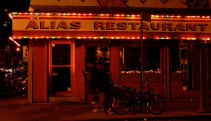

Big pimpin’ down in LES
The Lower East Side having been famously taken over by hipsters, I was a little surprised at the tanker-sized motor vehicles trolling its streets last night. MrLittlePants and I had ventured into enemy territory for a fine meal at lil’ Falai , and to consider, again, possibly moving from our ritzy street down to this ’hood.
I didn’t realize that it was, actually, a ’hood. Or rather, a ’hood-by-night, with hooligans commuting in from Long Island in GMC SUVs, with five DVD screens lit-up (though unwatched, as the pimp stalks alone), and last summer’s hip-hop blaring. I was waiting for a group of crazy hos to run by and flash us, but this was a strangely pimp-in-suv only affair. Where were they all going? Was it absolutely necessary for them to drive up Clinton Street to get there?

All that bass and tasteless excess distracted from the wanna-be-1920s act played by LES restaurants. That’s fine with me, as I have mixed feelings about their shenanigans. It’s absurd to go to such lengths to look run down (obviously) but I can’t say what I would rather look at. I guess I’d prefer that New Yorkers pay more attention to food service and less to atmosphere. Ha!
Anyway, living in that scene is out of the question for these old ladies. We get furious at the occasional lost NYU students reveling, singing, being dumb on 11th street after midnight. The LESUV scene would be an annoyance apocalypse. Honestly, I don’t know how the hipsties tolerate it, unless they speak-easily every Thurs/Fri/Sat night in some secluded endroit far away from the big shiny loud truck parking lot that the streets of their neighborhood become.
Actually, I guess that’s exactly what they do. As for us, we can’t make that party-hardy schedule work. So next week we’ll circle back around Chinatown in search of something less hap’nin’.
Backtalk
your font is impossible to read.
No way. What browser, computer?
Add a comment